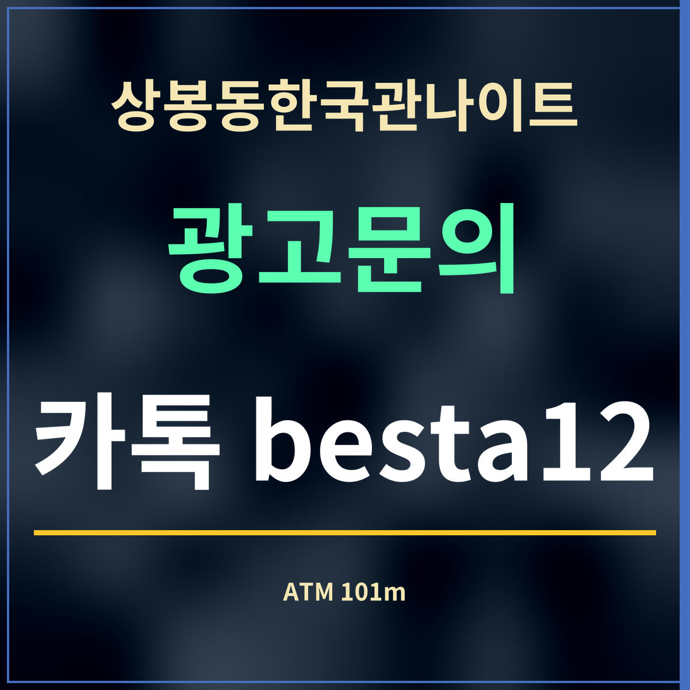

19세 미만 출입 금지
상봉동한국관나이트 근처 ATM 안내, 101m부터 7곳
제휴 없는 정보 안내 · ATM 위치는 카카오맵 검색(2026년 9월 27일), 거리는 가게 좌표에서 잰 직선거리입니다. 수수료와 이용 시간은 기기마다 달라 적지 않았습니다.

한 줄 답: 상봉동한국관나이트에서 가장 가까운 ATM은 망우로 316에 있는 편의점 ATM(101m)과 은행 365자동화점(108m)입니다.
거리순 ATM
| 이름 | 주소 | 직선거리 |
|---|---|---|
| GS25 중랑팰리스점 | 중랑구 망우로 316 | 101m |
| KB국민은행 상봉역 365자동화점 | 중랑구 망우로 316 | 108m |
| GS25 상봉센트럴시티점 | 중랑구 망우로 313 | 144m |
| CU상봉사랑점 | 중랑구 면목로92라길 15-2 | 229m |
| 수협은행 상봉역지점 | 중랑구 면목로 492 | 257m |
| SC제일은행 상봉역 | 중랑구 망우로 291 | 343m |
| 동서울농협 상봉지점 | 중랑구 망우로 290 | 365m |
늦은 시각에 쓸 때
은행 자동화점은 운영 시간이 정해져 있는 곳이 많고, 편의점 안 ATM은 편의점 영업시간을 따릅니다. 밤늦게 현금이 필요할 것 같다면 저녁에 미리 찾아 두는 편이 확실합니다.
현금을 찾을 때는 주변을 한 번 살피고, 찾은 돈은 바로 지갑에 넣어 두세요. 카드를 두고 오는 일이 잦은 곳이 ATM이니, 거래가 끝나면 카드와 명세표를 챙겼는지 확인합니다.
ATM 옆에서 같이 볼 것
현금을 찾은 뒤 지갑이나 휴대전화를 잃어버렸다면, 경찰민원24 누리집의 「분실물 신고」로 온라인 신고를 하거나 가까운 경찰서·지구대·파출소 유실물 담당자를 찾아가면 됩니다. 수수료와 구비서류는 없습니다(경찰민원24 안내 · 2026년 9월 27일 확인). 상봉동한국관나이트에서 가장 가까운 지구대는 망우로 391의 망우지구대로 직선 668m입니다.
자주 묻는 것
가장 가까운 ATM은 어디인가요?
망우로 316에 있는 편의점 ATM(직선 101m)과 은행 365자동화점(108m)입니다.
망우로 316에 있는 편의점 ATM(직선 101m)과 은행 365자동화점(108m)입니다.
수수료는 얼마인가요?
기기와 은행마다 달라 여기에는 적지 않았습니다. 화면 안내를 확인하세요.
기기와 은행마다 달라 여기에는 적지 않았습니다. 화면 안내를 확인하세요.
밤에도 쓸 수 있나요?
운영 시간은 기기마다 다릅니다. 밤늦게 필요하면 저녁에 미리 찾아 두세요.
운영 시간은 기기마다 다릅니다. 밤늦게 필요하면 저녁에 미리 찾아 두세요.
한 줄 정리: 상봉동한국관나이트 근처 ATM은 101m 앞 망우로 316에 모여 있습니다.
근처 쉴 곳은 카페를 보세요.